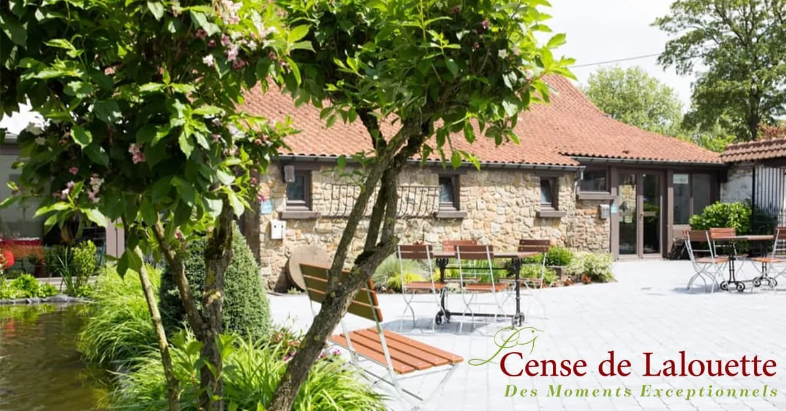

01
Spanish farm · 1700s

Cense de Lalouette
An 18th-century Spanish post-relay farm, stone courtyard, period pond, fully renovated into apartment-gîtes [1]. The shortest taxi home of any option here.
Style
6 apartment-gîtes
Sleeps
2–6 / unit
Taxi from Baudour
~5–10 min
Era
18th-c
Kitchen
Equipped, weekly housekeeping [11]
Address
188 Rue de Tournai, 7333 [10]
NoteProperty also hosts weddings & events — ask about quiet evenings when booking.